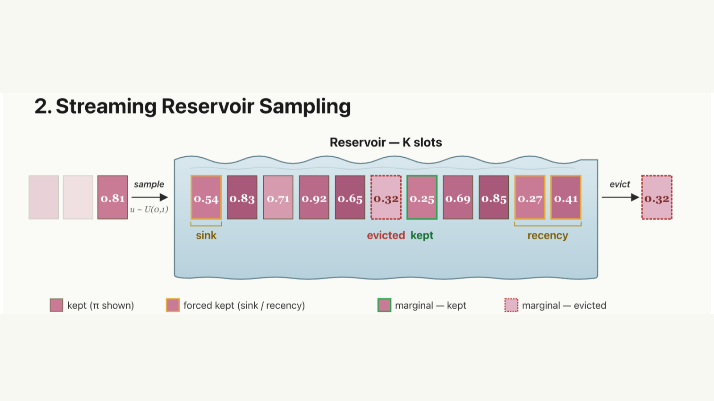

// RESEARCH · ACCEPTED — EMNLP 2026, MAIN CONFERENCE
Nexus Sampling — Streaming KV-Cache Eviction Under Fixed Budgets
WHATA training-free KV-cache eviction method that swaps deterministic Top-K for weighted reservoir sampling over an iterative walk, keeping the "bridge" tokens hard cutoffs throw away.
ROLECo-first author. At 80% eviction it stays within ~1 point of dense attention on LongBench and is the leading training-free eviction method in nearly every RULER cell, with 5–10× less per-sequence decode memory than dense FlashAttention-2.
READ PAPER →